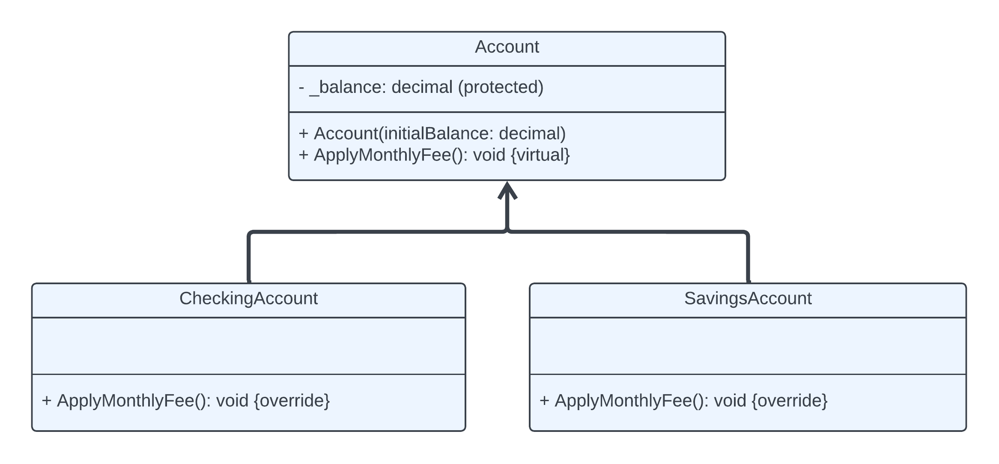

Polymorphism
Contents
Polymorphism#
Polymorphism allows related objects to be treated in a similar way, and allows derived classes to redefine how they respond to the same request by overriding the members defined by the base class.
For example, it allows a base class to define a set of members, known as the polymorphic interface, that are available to all of its derived classes. The polymorphic interface can be constructed using any number of virtual or abstract members.
Looking back at our bank system where we had various types of accounts such as CheckingAccount and SavingsAccount which all derive from a single base class Account. Each account type can have its own unique behaviours while also adhering to a general contract defined by the Account base class.
Virtual and Abstract Members#
In C#, Polymorphism is implemented using virtual and abstract members within classes.
Virtual Members
These are methods in a base class that have a default implementation but can be overridden by derived classes. For instance, a virtual CalculateInterest method in an Account class might have a basic implementation, but a SavingsAccount might override it to implement interest calculations specific to savings accounts.
Abstract Members
Unlike virtual members, abstract members do not provide an implementation. They merely define a method’s signature, and it’s mandatory for derived classes to provide their own implementations. If the Account class had an abstract GenerateStatement method, each subclass (CheckingAccount, SavingsAccount) would need to implement its own version of how statements are generated and formatted.
Using virtual and override keywords#
Base Class with Virtual Methods#
In our bank system, we want to include a method ApplyMonthlyFee to our Account base class which can be modified by different types of accounts. We will define this as a virtual method, allowing derived classes to provide their own implementations.
public class Account
{
protected decimal _balance;
public Account(decimal initialBalance)
{
_balance = initialBalance;
}
public virtual void ApplyMonthlyFee()
{
// Default behaviour: a basic account might have a fixed monthly fee
_balance -= 10.00m; // Deduct a $10 monthly fee
}
public void Deposit(decimal amount)
{
_balance += amount;
}
}
Derived Classes Overriding Behaviour#
Different types of accounts might have different fee structures. For example, CheckingAccount might have a higher fee, while SavingsAccount might have benefits that waive the fee under certain conditions.
public class CheckingAccount : Account
{
public CheckingAccount(decimal initialBalance) : base(initialBalance) { }
public override void ApplyMonthlyFee()
{
// Higher fee for checking accounts
_balance -= 20.00m; // Deduct a $20 monthly fee
}
}
public class SavingsAccount : Account
{
public SavingsAccount(decimal initialBalance) : base(initialBalance) { }
public override void ApplyMonthlyFee()
{
// No fee if the balance is above a certain threshold
if (_balance < 5000.00m)
{
_balance -= 5.00m; // Deduct a $5 monthly fee
}
}
}

UML Diagram: Using Polymorphism
With polymorphism, you can manipulate instances of these accounts through references to the base class Account, but each will behave according to their overridden implementations of ApplyMonthlyFee. This allows you to write generic code that handles different account types transparently:
List<Account> accounts = new List<Account>
{
new CheckingAccount(1000m),
new SavingsAccount(6000m)
};
foreach (Account account in accounts)
{
account.ApplyMonthlyFee();
Console.WriteLine($"New Balance: {account._balance}");
}
Abstraction#
Abstraction is a fundamental concept in object-oriented programming that aims to simplify complex realities. For instance, consider a person as an object. In the context of a software project, it’s not necessary to know every single detail about that person. Instead, you would focus only on the data and tasks that are relevant to your application and the operations you want to perform with that data. This way, abstraction helps to create more manageable and efficient systems by concentrating on essential aspects and ignoring the unnecessary ones.
While there are strong similarities between Abstraction and Encapsulation, they really serve different purposes although still complementing each other. Abstraction is about hiding the complexity of the system by exposing just the necessary components, whereas encapsulation is about hiding the internal states and behaviours to protect the integrity of the data.
Encapsulation vs. Abstraction#
Aspect |
Abstraction |
Encapsulation |
|---|---|---|
Definition |
Reduces complexity by hiding non-essential details. |
Bundles data and methods, limiting access to internals. |
Focus |
Design-level concept that simplifies system interactions. |
Implementation-level concept emphasizing data security. |
Purpose |
Focuses on essential functionalities of an object. |
Secures data integrity and controls interaction. |
What it hides |
Implementation details unnecessary for users. |
Internal state and implementation specifics. |
Level of Detail |
Shows only necessary features and functions. |
Encloses data and methods, obscuring how features work. |
Use Case |
Allows handling various Minions without knowing specifics. |
Controls how Minion properties are altered to prevent misuse. |
Implementation |
Utilizes interfaces or abstract classes for uniform actions. |
Uses access modifiers to manage data and method visibility. |
Dependency |
Often paired with encapsulation for better interface management. |
Typically complements abstraction for enhanced modularity. |
Abstract Classes#
Abstract classes allow us to establish a blueprint for a group of related classes without necessarily implementing the full functionality within the abstract class itself.
In our banking system, each type of account share a common feature such as the balance, depositing funds and withdrawing funds. However, the specific behaviours and rules for each account type could differentiate significantly.
Abstract Classes vs. Inheritance: What’s the Difference?#
Inheritance is a way to create a new class that derives from an existing class, inheriting its features and potentially extending or modifying them. An abstract class is often used as a base class in inheritance hierarchies, but its primary purpose is to outline a template and enforce certain architectural patterns. It dictates not only the structure but also the behaviour of its subclasses.
Normal base classes can usually be instantiated on their own, unless they are specifically made abstract. On the otherhand abstract classes cannot be instantiated directly and are designed to only be subclassed.
In a regular base class, methods do not need to be overridden by the subclass. However, in an abstract class, any abstract method must be implemented by the subclass, providing a strict contract that the subclass must adhere to.
While all abstract classes can be part of an inheritance hierarchy, not all base classes are abstract. Abstract classes define templates for other classes and prevent direct instantiation, promoting a design that encapsulates a concept without implementing all of its details. Inheritance, more generally, is about extending existing classes and reusing code across a class hierarchy.
Refactoring to Use Abstract Class and Methods#
public abstract class Account
{
protected decimal _balance;
public Account(decimal initialBalance)
{
_balance = initialBalance;
}
// Abstract method to apply monthly fees, requiring implementation in derived classes
public abstract void ApplyMonthlyFee();
public void Deposit(decimal amount)
{
_balance += amount;
}
}
public class CheckingAccount : Account
{
public CheckingAccount(decimal initialBalance) : base(initialBalance) { }
public override void ApplyMonthlyFee()
{
// Specific implementation for checking accounts
_balance -= 20.00m; // Deduct a $20 monthly fee
}
}
public class SavingsAccount : Account
{
public SavingsAccount(decimal initialBalance) : base(initialBalance) { }
public override void ApplyMonthlyFee()
{
// Conditional fee application based on the balance
if (_balance < 5000.00m)
{
_balance -= 5.00m; // Deduct a $5 monthly fee
}
}
}
Important
Abstract methods are special types of methods that do not have an implementation and are designed to be overridden by a subclass. They can only be defined in abstract classes. If you try to define an abstract method in a regular class, you will get a compiler error.
Another Example of Using Abstract Classes and Methods
namespace BankSystem
{
public abstract class Account
{
protected string _name;
protected decimal _balance;
public Account(string name, decimal balance)
{
_name = name;
_balance = balance;
}
public abstract void DisplayBalance();
}
class BankAccount : Account
{
public BankAccount(string name, decimal balance) : base(name, balance)
{
}
public override void DisplayBalance()
{
Console.WriteLine("Balance: {0:C}", _balance);
Console.WriteLine("Account name: {0}", _name);
}
}
class Program
{
static void Main(string[] args)
{
BankAccount account = new BankAccount("John Wick", 1000);
account.DisplayBalance();
}
}
}
In our new example, we’ve created an abstract class Account with protected fields _name and _balance. The Account class also contains an abstract method called DisplayBalance().
The BankAccount class is now derived from the Account class and implements the DisplayBalance() method. This type of design follows very closely to how we might use inheritance.
Using Interfaces#
When you define a class as an abstract base class using the abstract keyword, you’re setting up a framework that other classes can build upon. This type of class often includes abstract members, which are methods or properties that don’t have their own implementation in the abstract class itself. Instead, any class that inherits from this abstract base class is required to provide its own implementation of these abstract members.
Now, an interface in object-oriented programming can be thought of as a contract or a purely abstract class that dictates a structure but not the specifics of the implementation. Unlike abstract classes, interfaces can only contain method and property declarations with no implementation details whatsoever — they are, in essence, completely abstract.
namespace BankSystem
{
// Define an interface with the required methods
public interface IAccount
{
void DisplayBalance();
}
// Implement the interface in the BankAccount class
public class BankAccount : IAccount
{
private string _name;
private decimal _balance;
public BankAccount(string name, decimal balance)
{
_name = name;
_balance = balance;
}
public void DisplayBalance()
{
Console.WriteLine("Balance: {0:C}", _balance);
Console.WriteLine("Account name: {0}", _name);
}
}
class Program
{
static void Main(string[] args)
{
IAccount account = new BankAccount("John Wick", 1000);
account.DisplayBalance();
}
}
}
We can notice that both abstract classes and interfaces look quite similar. However, we would use abstract classes when we might need to share code among closely related classes and define common behaviour. They allow for fields, constructors and implemented methods.
Interfaces should be used when you need to define a contract for what methods a class should implement, without dictating how they should do so. They offer more flexibility through multiple inheritance and decoupling.
Abstract classes vs. Interfaces#
Aspect |
Abstract Classes |
Interfaces |
|---|---|---|
Definition |
A class that cannot be instantiated and can include both abstract and concrete methods. |
A completely abstract type that defines a set of methods and properties without implementation. |
Purpose |
Used to provide a common base class with shared code and state, as well as to define a contract. |
Used to define a contract that multiple classes can implement, ensuring they all provide certain methods. |
Implementation |
Can include fields, constructors, and methods with implementation. |
Can only include method and property declarations (no fields or implementation). |
Multiple Inheritance |
A class can inherit from only one abstract class (single inheritance). |
A class can implement multiple interfaces, allowing for more flexible designs. |
Flexibility |
Less flexible due to single inheritance; used when classes share a common base or functionality. |
More flexible due to multiple inheritance; ideal for defining common functionality across unrelated classes. |
Use Case |
Use when you need to share code among closely related classes and define common behaviour. |
Use when you need to define capabilities that can be shared across different classes without forcing a class hierarchy. |
Fields and Constructors |
Can have fields, constructors, and access modifiers on methods. |
Cannot have fields or constructors; all methods are implicitly public and abstract. |
Default Implementation |
Can provide default behaviour for some methods, allowing subclasses to override only what’s necessary. |
Cannot provide any implementation; all methods must be implemented by the class that implements the interface. |
Important
To clearly distinguish interfaces from classes, it’s a common convention to prefix interface names with the letter “I”. This naming convention helps both you and other developers quickly identify the type as an interface.
By design, all members of an interface are implicitly abstract and public, meaning they must be implemented by any class that implements the interface.
Interfaces can declare properties and methods, but they cannot include fields.